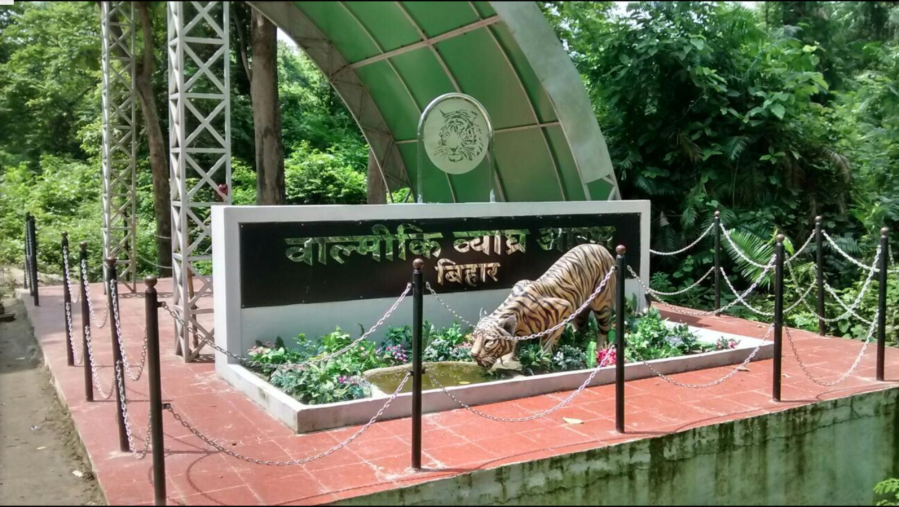

<!DOCTYPE html>
<html lang="en">
<head>
    <meta charset="UTF-8">
    <meta http-equiv="X-UA-Compatible" content="IE=edge">
    <meta name="viewport" content="width=device-width">
    <title>Document</title>
    <script>
        function getPics() {} //just for this demo
        const imgs = document.querySelectorAll('.gallery');
        const fullPage = document.querySelector('#fullpage');
        
        imgs.forEach(img => {
          img.addEventListener('click', function() {
            fullPage.style.backgroundImage = 'url(' + img.src + ')';
            fullPage.style.display = 'block';
          });
        });

        $('img[eng]').addClass('eng').click(function(){
    var src = $(this).attr('src');
    $('<div>').css({
        background: 'RGBA(0,0,0,.5) url('+src+') no-repeat center',
        backgroundSize: 'contain',
        width:'100%', height:'100%',
        position:'fixed',
        zIndex:'10000',
        top:'0', left:'0',
        cursor: 'zoom-out'
    }).click(function(){
        $(this).remove();
    }).appendTo('body');
});
        </script>
</head>
<body>
    
</body>
</html>
<style>
    *{
        margin: 9px 9px;
        font-family: 'Franklin Gothic Medium', 'Arial Narrow', Arial, sans-serif;
    }

   /* Add a black background color to the top navigation bar */
.topnav {
  overflow: hidden;
  background-color: #e9e9e9;
}

/* Style the links inside the navigation bar */
.topnav a {
  float: right;
  display: block;
  color: black;
  text-align: center;
  padding: 14px 16px;
  text-decoration: none;
  font-size: 17px;
}

/* Change the color of links on hover */
.topnav a:hover {
  background-color: #ddd;
  color: black;
}

/* Style the "active" element to highlight the current page */
.topnav a.active {
  background-color: #2196F3;
  color: white;
}

/* Style the search box inside the navigation bar */
.topnav input[type=text] {
  float: right;
  padding: 6px;
  border: none;
  margin-top: 20px;
  margin-right: 16px;
  font-size: 17px;
}

/* When the screen is less than 600px wide, stack the links and the search field vertically instead of horizontally */
@media screen and (max-width: 600px) {
  .topnav a, .topnav input[type=text] {
    float: none;
    display: block;
    text-align: left;
    width: 100%;
    margin: 0;
    padding: 14px;
  }
  .topnav input[type=text] {
    border: 1px solid #ccc;
    
  }
}

nav {
    text-align: center;
    background-color: rgb(187, 186, 186);
    color: black;
  position: relative;
  padding-bottom: 12px;
}
nav.line {
  height: 2px;
  position: absolute;
  bottom: 0;
  margin: 10px 0 0 0;
  background: #d10d34;
}
nav ul {
    
  padding: 5px;
  margin: 5px;
  list-style: none;
  display: flex;
}
nav ul li {
  margin: 0 40px 0 0;
  opacity: 1;
  transition: all 0.4s ease;
}
nav ul li:hover {
    color: #d10d34;
  opacity: 2;
}
nav ul li.active {
  opacity: 2;
}
nav ul li:last-child {
  margin-right: 0;
}
nav ul li a {
  text-decoration: none;
  color: #000000;
  text-transform: uppercase;
  display: block;
  font-weight: 600;
  letter-spacing: 0.2em;
  font-size: 14px;
}

#fullpage {
  display: none;
  position: absolute;
  z-index: 9999;
  top: 0;
  left: 0;
  width: 100vw;
  height: 100vh;
  background-size: contain;
  background-repeat: no-repeat no-repeat;
  background-position: center center;
  background-color: black;
}


.headline{
    height: 100px;
    width: 100%;
    font-size: 25px;
}
.image{
    height: 500px;
    width: 100%;
    border: 2px white;
    border-radius: 8px;
    
}
.image ul {
    align-content: baseline;
    
}

.container{
    display: flex;
}
.data{
    overflow: auto;
    height: 400px;
    width: 800px;
    font-size: large;
    /* border: 2px solid black;
    border-radius: 8px; */
}
/* .gallary{
    height: 400px;
    width: 660px;
    border: 2px solid black;
    border-radius: 8px;
} */
.photo1{
    height: 400px;
    width: 60%;
    /* border: 2px solid black;
    border-radius: 8px; */
    float: right; 
}
/* .short{
    position: absolute;
    top: 1500px;
    height: 400px;
    width: 26%;
    border: 2px solid black;
    border-radius: 8px;

} */
.bg{
    bottom: 0px;
    height: 50px;
    width: 100%;
}

.short1{
    position: absolute;
    /* top: 1500px; */
    /* left: 420px; */
    height: 500px;
    width: 36%;
    border: 2px solid black;
    border-radius: 8px;

}
</style>
<body>
    <nav>
        <ul>
          <li class="active"><a href="index.html">Home</a></li>
          <li><a href="">About</a></li>
          <li><a href="">Contact Us</a></li>
        </ul>
    </nav>
    <div class="address">
        <br>
       <h3>Home/Adventure/Valmiki Tiger Reserve</h3> 
    </div>
    <br>
    <div class="headline">
        <h1>Valmiki Tiger Reserve</h1>
    </div>
    <div class="image">
        
    </div>
    <br><br><br><br><br><br>
    <div class="container"> 
    <div class="data">
        <p>As we all know the forest and wildlife are important for every country. If we talk about in India there's a famous Valmiki Tiger Reserve forms the eastern most limit of the Himalayan Terai forests in India and is the only tiger reserve of Bihar. Situated in the Gangetic Plains bio-geographic zone of the country, the forest has combination of bhabar and terai tracts. <br><br> It was declared a Wildlife Sanctuary in 1978. Valmiki National Park was established in the year 1990. Total area of the park is about 335 Km2. Valmiki Wildlife Sanctuary and National Park is the 18th Tiger Reserve of the country. <br><br> Valmiki Tiger Reserve lies in the north-western (mostly in the West Champaran) district of Bihar. Name of the district has been derived from two words Champa and Aranya meaning Forest of Champa trees. Sanctuary is reported to shelter of 250 species of birds 53 mammals, 145 birds, 26 reptile and 13 amphibians and Tiger Reserve, amazing nahh!! . It is located in West Champaran which derives its name from two words, Champa and Aranya, meaning forest of Champa trees. The wildlife found in the forest of VTR are the Bengal tiger, Indian rhinoceros, Asiatic Elephant, Asiatic black bear, Indian sloth bear,[9] otter, Indian leopard, wild dog, wild water buffalo, and wild boar. 

            The reptiles which are commonly found in VTR are pythons, King cobras, Krait, Banded kraits and domuha snakes (sand boas). 
            
            At present 241 bird species have been reported from VTR. Some of the interesting birds of VTR are Nepal kalij pheasant, three-toed quail, paradise flycatcher, grey shrike, green willow warbler, tree pipit, white eye warbler, green barbet, waders, ibises, storks, pitta, plovers, snipes, pied hornbill, White-eared night heron, emerald dove
            <br><br>
            The Valmiki landscape harbors vivid socio-cultural diversity. The Tharu people, a scheduled tribe, is the dominant community in the landscape</p>
    </div>
    <div class="gallary">
        
        <ul>
            <li>Distance From Bhagalpur: 445.3 Kms</li>
            <li>Via NH27</li>
        </ul>
        <div id="fullpage" onclick="this.style.display='none';"></div>
    </div>
        </div>
        
        <div class="photo1">
            <divclass="mapouter"><div class="gmap_canvas"><iframe class="gmap_iframe" width="100%" frameborder="0" scrolling="no" marginheight="0" marginwidth="0" src="https://maps.google.com/maps?width=600&amp;height=500&amp;hl=en&amp;q=balmiki tiger reserve&amp;t=&amp;z=10&amp;ie=UTF8&amp;iwloc=B&amp;output=embed"></iframe><a href="https://capcuttemplate.org/">Capcut Template</a></div><style>.mapouter{position:relative;text-align:right;width:97%;height:500px;}.gmap_canvas {overflow:hidden;background:none!important;width:97%;height:500px;}.gmap_iframe {height:500px!important;}</style></div></div>
        </div>

       <div class="short1">
        
       </div>
       <br><br><br><br><br><br><br><br><br><br><br><br><br><br><br><br><br><br><br><br><br><br><br><br><br><br><br>
       <br><br><br><br><br>
</body>
</html>
